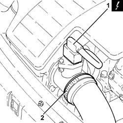
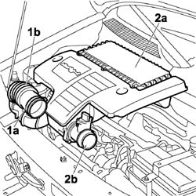
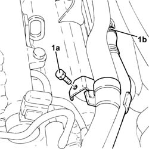
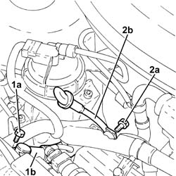
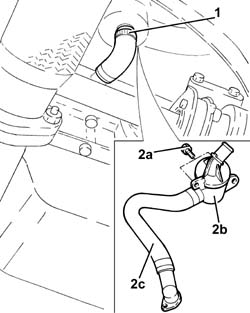
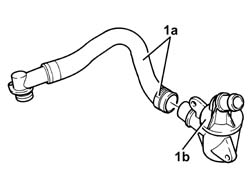

1080D34 engine oil vapour separator - r + r
- Path
- Procedures > 10 ENGINE > 1080 EMISSION CONTROL SYSTEM > 1080D crankcase vapour/gas recirculation system > 1080D34 engine oil vapour separator - r + r
- Kind
- repair procedure (removal / refitting; the operation number is the code)
- Applies to
- all engines; all production periods
- Interactive page
- https://sloeber94.github.io/elrnDB-fDbl/en/#/2584432
Applies to: all engines; all production periods
 Removing
Removing
 Refitting
RefittingEnsure that the ignition key is in the OFF position, then disconnect the negative battery terminal.
 | Name | Connector |
|---|---|---|
- | Battery | A1H |
1. Disconnect the electrical connection from the air flow meter.
| Name | Connector |
|---|---|---|
1 | Air flow meter | K41 |
2. Loosen the band and disconnect the turbocharger air inlet sleeve from the rigid pipe, air flow meter side.

Applies to: all engines; all production periods
1. Remove the air filter (1a) complete with air flow meter (1b) by releasing from the underlying pins and then from the rear fastenings.

Applies to: all engines; all production periods
1. Undo the bolts (1a), loosen the band and disconnect the engine oil vapour recirculation pipe (1b), separator side.

Applies to: all engines; all production periods
1. Undo the bolt (1a) and disconnect the connector (1b) of the oil vapour recovery pipe from the timing cover.
2. Undo the bolt (2a) and remove the complete engine oil dipstick pipe (2b).

Applies to: all engines; all production periods
1. Loosen the band and disconnect the engine oil vapour recovery pipe, separator side.
2. Undo the bolts (2a) and remove the engine oil vapour separator (2b), complete with engine oil vapour recovery pipe (2c).

Applies to: all engines; all production periods
1. At the bench, undo the band and separate the engine oil vapour recovery pipe (1a) from the separator (1b).

Applies to: all engines; all production periods
Refitting
RemovingConnect the oil vapour recovery pipe to the separator and tighten the band.
Refit in its seating the oil vapour separator complete with oil vapour recovery pipe and secure it with its bolts.
Connect the engine oil recovery pipe, separator side, and tighten the band.
Place the engine oil dipstick tube in its seating and fix it using the bolt.
Connect the engine oil vapour recovery pipe connector to the timing cover and tighten the bolts.
Connect the engine oil vapour recirculation pipe to the separator, then tighten the band and bolts.
Replace the air filter, complete with air flow meter, in its housing.
Connect the air intake sleeve to the turbocharger, air flow meter side, and tighten the band.
Connect the electrical connection to the air flow meter.
Connect the battery negative terminal.
| Name | Connector |
|---|---|---|
- | Battery | A1H |